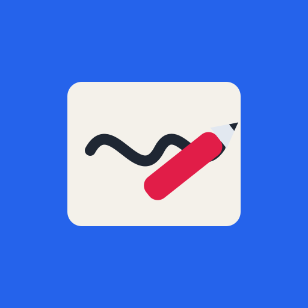

Envie desenhos de traço sobre fundo claro — cada imagem vira uma cena, desenhada na ordem dos números. Com 2+ imagens vira o modo cartolina.
Envie uma foto da sua mão segurando a caneta (de preferência com o braço saindo pela borda da foto). Eu te guio no recorte do fundo e na marcação da ponta.
Clique exatamente na ponta da caneta — é dali que o traço vai sair no vídeo.
O navegador às vezes esquece a mão salva — baixar o app com ela embutida é o jeito à prova de tudo: um arquivo só, que roda até offline.
Aumente se partes do desenho estiverem sumindo; diminua se o fundo estiver virando traço.